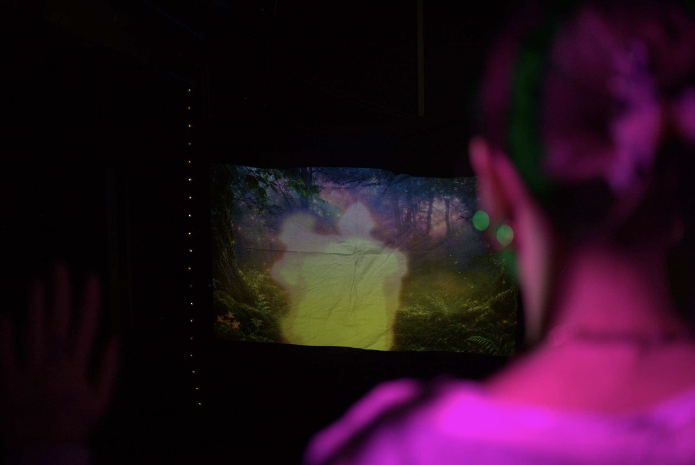
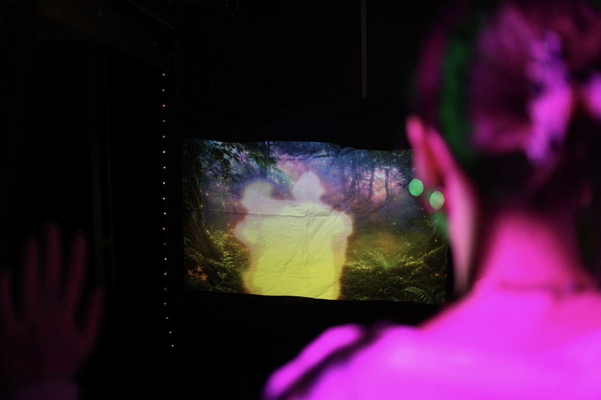
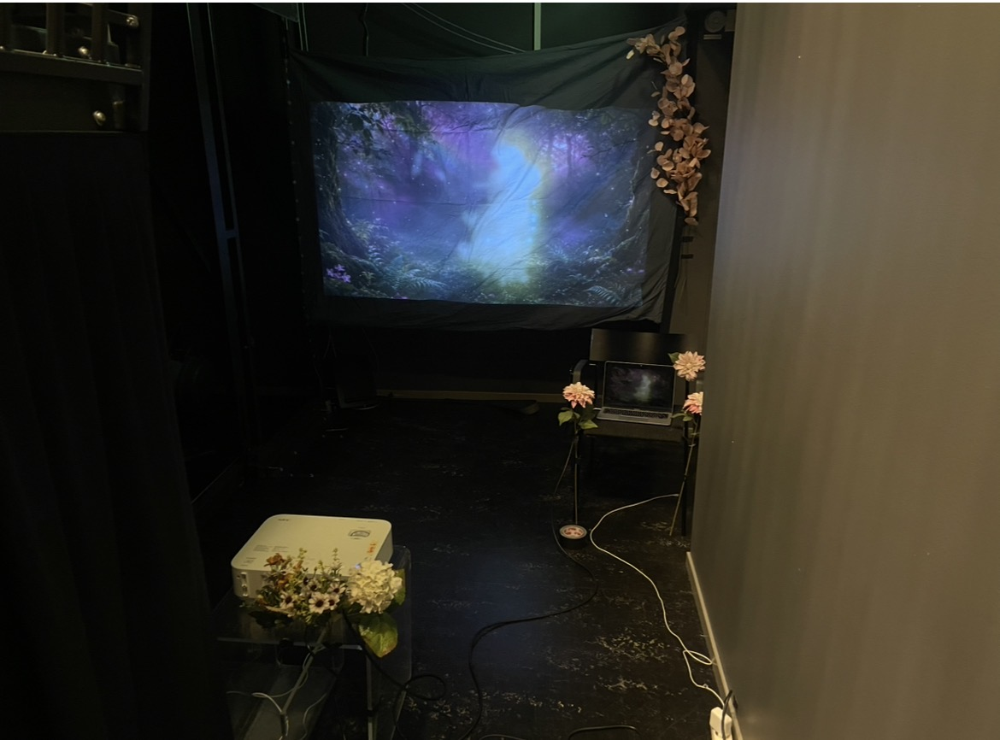
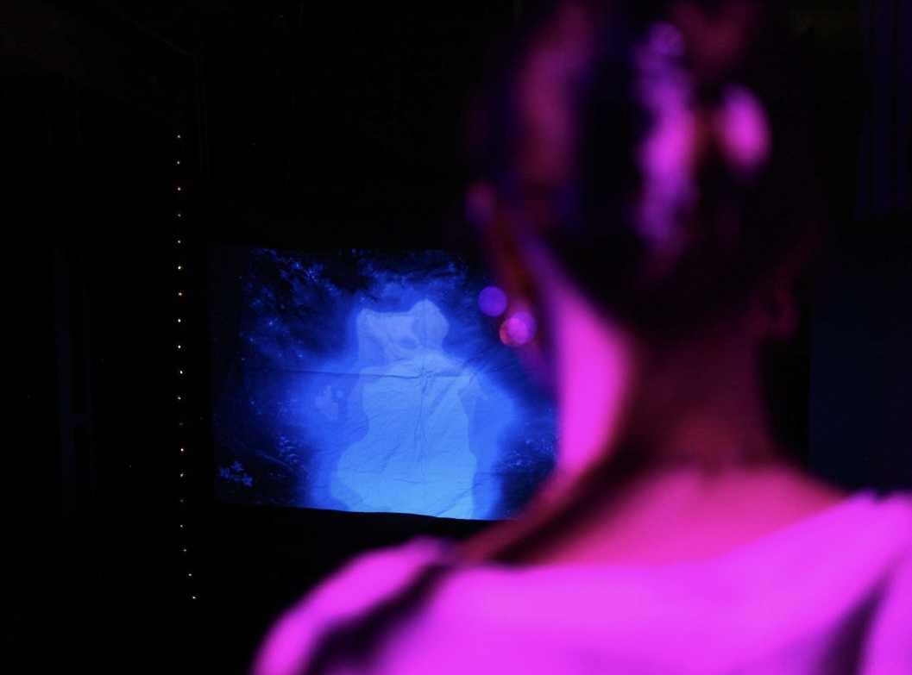

CREATIVE PROGRAMMING · FINAL PROJECT · 2026
Forest Fairy Rave ✧
A magical, interactive forest where your movements turn into glowing auras, particles and sound.
Created by Sara Vendel & Emmy Hedlund · Group 6

01 / THE IDEA
Step into the magic.
Forest Fairy Rave is an interactive audiovisual installation inspired by aura photography, fairy folklore and rave culture. In a magical forest, a webcam captures visitors' movements and turns their bodies into glowing white silhouettes surrounded by colourful auras.
MediaPipe separates the body from the background, while JavaScript creates light particles from movement. Tone.js generates musical notes: movement height influences pitch, and the amount of movement influences how often notes play. We wanted the experience to feel dreamy, a little surreal and calming — with the visitor as part of the artwork.
Allow camera access and click/tap to activate sound. Camera access generally requires HTTPS or localhost.
02 / DOCUMENTATION
Little moments of magic.
Five photos from the project.





03 / WATCH
See it in motion.
A short 30–60 second video of the experience.
04 / THE CREATORS
Made with wonder.
Forest Fairy Rave was created by Sara Vendel and Emmy Hedlund for the Creative Programming course at Södertörn University. Together we combined coding, visual design, camera interaction and generative sound to create a magical experience.